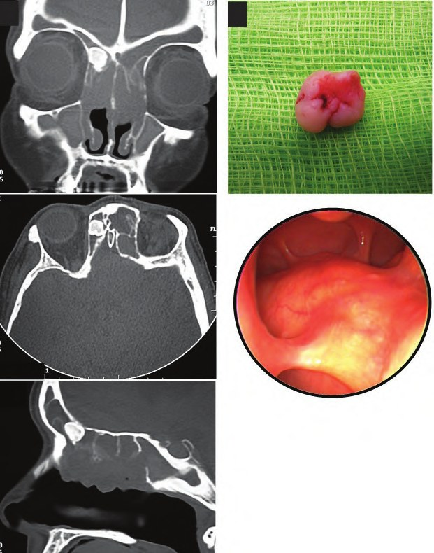

Сверка с PDF рубрикатора выполняется…
Доброкачественные остео- и хондрогенные опухоли носа и пазух
Клинические рекомендации от 04.03.2023 · взрослые
Основные положения
- Доброкачественные костные и хрящевые опухоли носа и околоносовых пазух:
- остеома;
- остеобластома;
- фиброзная дисплазия;
- аневризматическая костная киста;
- оссифицирующая фиброма;
- гигантоклеточная опухоль;
- хондрома и другие хрящевые опухоли.
- Стойкий или прогрессирующий на фоне лечения односторонний воспалительный процесс в полости носа и пазухах требует исключения опухоли: показаны КТ носа и околоносовых пазух, при необходимости биопсия.
- Диагноз устанавливается на основании жалоб, анамнеза, осмотра, эндоскопии полости носа и КТ носа и околоносовых пазух.
- Лечение хирургическое. При небольшой бессимптомной остеоме допустима выжидательная тактика. После операции выполняется контрольная КТ через 3–6 месяцев, затем через 1 год и более.
Клиническая картина и классификация
Определения
Опухоли раздел 1.1 КР
| Опухоль | Определение |
|---|---|
| Остеома | медленно растущая (0,44–6,0 мм в год) опухоль из костной ткани; случаев малигнизации не описано |
| Остеобластома | редкая опухоль из костной ткани, продуцирующая ретикуло-фиброзные перекладины, окружённые крупными остеобластами |
| Фиброзная дисплазия | опухолевидное поражение: разрушение костной ткани с деформацией и заполнением костномозгового канала фиброзной тканью |
| Аневризматическая костная киста | редкое заболевание кости с локальным деструктивным и экспансивным ростом |
| Оссифицирующая фиброма | опухоль из кальцификатов, цемента, костной и фиброзной ткани; ювенильная форма течёт агрессивнее |
| Гигантоклеточная опухоль (остеокластома) | редкое новообразование кости с локально-агрессивным, деструктивным ростом |
| Хондрома | истинная опухоль из хрящевой ткани с длительным развитием: от 3 месяцев до 10 лет |
| Хондромиксоидная фиброма | редкая опухоль из веретеновидных или звёздчатых клеток в миксоидной или хондроидной строме |
| Хондробластома | редкая опухоль из хондробластов |
| Носовая хондромезенхимальная гамартома | опухоль из веретенообразных клеток, хрящевой ткани и геморрагических кист |
Остеома правой лобной пазухи

Этиология
Причины окончательно не установлены. Возможные факторы риска — нарушение эмбриогенеза, инфекция, травма; при фиброзной дисплазии основную роль играет мутация гена GNAS1.
Классификация
Общепринятой классификации нет; классификации отдельных опухолей рабочие и учитываются при планировании лечения.
Рабочие классификации- остеома по строению: компактная, губчатая, смешанная;
- остеобластома по скорости роста: латентная, активная, агрессивная;
- фиброзная дисплазия: монооссальная (70–85%) и полиоссальная (15–30%);
- аневризматическая костная киста, фазы: остеолиз, отграничение, восстановление;
- хондрома: энхондрома (внутри кости) и экхондрома (на поверхности кости).
Клиническая картина
Жалобы, как правило, связаны с ростом опухоли, её давлением на стенки пазух и (или) распространением на смежные области. Опухоли небольших размеров обычно не сопровождаются жалобами и могут быть случайной находкой при рентгенологическом обследовании.
Частые жалобы- головная боль в носо-лицевой области, в проекции пазухи;
- заложенность носа, аносмия — при обтурации соустья, вторичном синусите, мукоцеле;
- рецидивирующие носовые кровотечения — при аневризматической костной кисте;
- асимметрия и безболезненный отёк лица — при фиброзной дисплазии;
- головная боль, нарушение зрения, тригеминальная гиперчувствительность, парез глазных мышц — при гигантоклеточной опухоли клиновидной кости.
- деформация носоглазничной области, проптоз, периорбитальная боль, хемоз, диплопия, периорбитальная эмфизема;
- слезотечение — при сдавлении носослёзного канала;
- снижение зрения — при сдавлении зрительного нерва;
- общемозговые и очаговые симптомы, менингит, абсцесс мозга — при интракраниальном распространении.
Анатомия и физиология: нос, околоносовые пазухи.
Диагностика
Диагноз устанавливается по жалобам, анамнезу, физикальным данным, эндоскопической ревизии полости носа и носоглотки и КТ носа и околоносовых пазух.
Симптомы неспецифичны и в начале заболевания минимальны. Выраженная клиническая картина отсутствует в 4–10% случаев остеомы, а случайно эта опухоль обнаруживается при КТ у 1–3% обследованных.
Жалобы и анамнез
- сроки, последовательность и динамику жалоб;
- прежние травмы и заболевания носа и пазух, их лечение и эффект;
- результаты прежних обследований: анализы, КТ, МРТ, биопсия, протоколы операций;
- похожие жалобы у близких родственников.
Осмотр
Общий осмотр, пальпация и перкуссия носо-лицевой области, пальпация подчелюстных, подподбородочных и глубоких шейных лимфоузлов. Для доброкачественных опухолей изменения регионарных лимфоузлов не характерны.
Передняя риноскопия и видеориноскопия
- все пациенты: передняя риноскопия.
- преддверие носа и передние отделы слизистой оболочки полости носа;
- нижнюю и среднюю носовые раковины, перегородку носа;
- наличие и характер отделяемого в носовых ходах;
- новообразование в передних отделах полости носа или распространяющееся туда из глубоких отделов, обтурирующее полость носа.
Видеориноскопия риноскопом или фиброскопом показана всем пациентам. Первичный осмотр целесообразно выполнять без подготовки полости носа и анестезии.
Компьютерная томография носа и околоносовых пазух
- подозрение на опухоль носа и околоносовых пазух: КТ от плоскости твёрдого нёба до верхней границы лобной пазухи, толщина среза 2 мм.
- локализацию, распространённость и размеры новообразования;
- структуру новообразования;
- кальцификацию;
- ремоделирование прилежащей костной ткани.
- компактная: округлое плотное почти бесструктурное образование;
- губчатая: грубо-трабекулярная структура;
- смешанная: зона 300–600 ед. Н губчатого строения и зона более 800 ед. Н компактного вещества.
Фиброзная дисплазия на КТ — однородная ткань «матового стекла» плотностью около 300–450 ед. Н, не инкапсулирована; кистозная форма — с участками более низкой плотности.
Остеобластома на КТ — сочетание плотной кости и участков затемнения.
Хондрома на КТ — образование гетерогенной плотности с чёткими границами и очагами минерализации.
Остеохондрома на КТ — костное вещество неоднородной плотности в центре, ткань хрящевой плотности по периферии.
МРТ и консультации специалистов
МРТ и консультации челюстно-лицевого хирурга, офтальмолога, нейрохирурга позволяют выявить распространение опухоли на верхнюю челюсть, глазницу и в полость черепа.
Обязательны при- изменениях зубочелюстной системы: смещение, расшатывание, выпадение зубов, деформация;
- глазных симптомах: проптоз, периорбитальная боль, хемоз, диплопия, слезотечение;
- менингеальных и очаговых неврологических симптомах.
Биопсия
По показаниям выполняется биопсия и патологоанатомическое исследование с иммуногистохимией для дифференциальной диагностики доброкачественной и злокачественной опухоли.
Способы биопсии- прицельная биопсия под эндоскопом: материал берут на границе опухоли с неизменёнными тканями;
- эксцизионная биопсия: при небольших размерах опухоли;
- аспирационная биопсия иглой: при кистозном образовании, солидной опухоли;
- цитологическое исследование отпечатка или мазка-отпечатка со слизистой оболочки: в отдельных случаях.
Лечение
Лечение хирургическое: эндоназальный, наружный или комбинированный доступ. Применение навигационного оборудования повышает эффективность и безопасность вмешательства.
Экстраназальные доступы при значительной распространённости опухоли- транспалатинный;
- боковая ринотомия;
- краниофациальная резекция;
- срединный декортикационный доступ (midfacial degloving).
Остеома
Для удаления остеомы применяют эндоназальный (эндоскопический), наружный или комбинированный доступ; способ зависит от размеров опухоли и места её прикрепления к стенке пазухи. Наружный доступ более травматичен: возможны послеоперационный эстетический дефект, парестезии, прозопалгия.
При небольшой бессимптомной остеоме рекомендуется выжидательная тактика. По некоторым данным, к операции следует прибегать при остеоме, занимающей более 50% объёма пазухи. Рецидивы редки и возникают, как правило, через 5–8 лет.
Классификация остеом лобной пазухи по A. G. Chiu, 2005 таблица 1 КР
| Степень | Остеома лобной пазухи |
|---|---|
| 1 | прикреплена сзади-снизу, медиальнее плоскости бумажной пластинки; переднезадний размер меньше 75% лобного кармана |
| 2 | то же расположение, переднезадний размер больше 75% лобного кармана |
| 3 | прикреплена спереди или сверху и (или) выходит латеральнее плоскости бумажной пластинки |
| 4 | полностью обтурирует лобную пазуху |
- предпочтительно при остеомах 1 и 2 степени, описано и успешное удаление 3 и 4 степени;
- относительное ограничение: большие остеомы задне-верхних отделов лобной пазухи (из-за длительности вмешательства);
- не показано при остеоме на передней и нижней стенке латеральных отделов лобной пазухи;
- интраорбитальное и интракраниальное распространение не является абсолютным противопоказанием.
Фиброзная дисплазия
В связи с возможностью регресса рекомендуется выжидательная тактика с постоянным наблюдением и периодической КТ.
Показания к хирургическому лечению- выраженная костная деформация;
- возраст пациента;
- ограниченная распространённость изменений.
- бифосфонаты: профилактика патологических переломов и боли; существует риск остеонекроза челюсти;
- при синдроме Мак-Кьюна — Олбрайта: терапия для купирования эндокринных нарушений.
- облегчение симптомов риносинусита, ассоциированного с фиброзной дисплазией;
- декомпрессия зрительного нерва.
Эффективность декортикации стенок верхнечелюстной пазухи требует доказательств.
Другие опухоли
Лечение по виду опухоли раздел 3 КР
| Опухоль | Лечение |
|---|---|
| Остеобластома | хирургическое удаление эндоназальным, наружным или комбинированным доступом с учётом локализации, размеров и места прикрепления опухоли |
| Аневризматическая костная киста | хирургическое удаление: от пункции полости кисты до кюретажа и резекции поражённого участка кости; предоперационная эмболизация питающих сосудов |
| Оссифицирующая фиброма | возможно более раннее и полное удаление: краниофациальная резекция, латеральная ринотомия, midfacial degloving или эндоскопическая диссекция; продолжительное послеоперационное наблюдение |
| Гигантоклеточная опухоль | хирургическое удаление; длительное динамическое наблюдение |
| Хондрома | хирургическое удаление из-за риска малигнизации и разрушения стенок; предпочтительно эндоскопическое удаление, а при распространении опухоли в верхнечелюстную пазуху и орбиту — гайморотомия по Денкеру |
| Хондромиксоидная фиброма | хирургическое удаление; предпочтительна широкая эксцизия эндоскопически или доступом midface degloving |
| Хондробластома | радикальное иссечение |
Лучевая терапия
- при гигантоклеточной опухоли лучевая терапия может быть рекомендована, если локализация ограничивает радикальное удаление или требует инвалидизирующего вмешательства;
- при аневризматической костной кисте она возможна, но нежелательна из-за риска малигнизации (трансформации в саркому);
- при оссифицирующей фиброме она оказалась неэффективной и потенциально опасна из-за вероятности малигнизации опухоли.
У остеобластомы описан случай малигнизации после лучевой терапии.
Рецидивы после удаления
- остеобластома: после радикального удаления рецидивов нет в течение 5–15 лет; у детей частота рецидивов достигает 32%;
- аневризматическая костная киста: рецидивы в 10–30% случаев, чаще в течение первых двух лет;
- ювенильная оссифицирующая фиброма: до 30% даже при полном удалении, риск сохраняется до 18 лет;
- гигантоклеточная опухоль: частота рецидивов зависит от распространённости, данных для носа и пазух нет;
- хондромиксоидная фиброма: кюретаж эффективен в 80%; многократные рецидивы описаны и после радикальной операции; при иссечении единым блоком рецидивов меньше, но операция травматичнее;
- хондробластома: при одном кюретаже рецидивы достигают 55%.
Хондрома: другие доступы
- радикальное удаление распространённой хондромы носа и околоносовых пазух может быть затруднено осложнениями во время операции, в частности кровотечением;
- в некоторых случаях при такой локализации прибегают к чрезнёбному или наружному (боковая ринотомия) доступу;
- хондрому носовых костей можно успешно удалить доступом, используемым при наружной ринопластике.
Алгоритм действий врача при симптомах новообразования носа и околоносовых пазух
- 1
Пациент с симптомами новообразования носа и околоносовых пазух
Пациента беспокоят симптомы, подозрительные на новообразование носа и околоносовых пазух. Стойкий или прогрессирующий на фоне лечения односторонний воспалительный процесс в полости носа и пазухах требует исключения опухоли.
- 2
Диагностика
Диагноз устанавливается на основании жалоб, анамнеза, осмотра, эндоскопии полости носа и компьютерной томографии (КТ) носа и околоносовых пазух. При необходимости выполняется биопсия.
При изменениях зубочелюстной системы, глазных симптомах, менингеальных и очаговых неврологических симптомах обязательны магнитно-резонансная томография (МРТ) и консультации челюстно-лицевого хирурга, офтальмолога, нейрохирурга.
- 3
Подтверждён диагноз доброкачественной опухоли?
Результаты обследования позволяют судить о природе образования: это доброкачественная костная или хрящевая опухоль (остеома, остеобластома, фиброзная дисплазия, хондрома и др.) либо иная патология.
Подтверждён ли диагноз доброкачественной остео- или хондрогенной опухоли?
- 4
Консультация / лечение у профильного специалиста
конец алгоритмаДиагноз доброкачественной опухоли не подтверждён. Дальнейшее обследование и лечение проводятся у профильного специалиста.
- 5
Наличие показаний к хирургическому лечению?
Диагноз подтверждён. Лечение опухоли хирургическое, однако при небольшой бессимптомной остеоме допустима выжидательная тактика, а при фиброзной дисплазии из-за возможного регресса рекомендуется наблюдение с периодической КТ.
Есть ли показания к хирургическому лечению?
- 6
Наблюдение / лечение в амбулаторных условиях
Показаний к операции нет, пациент наблюдается и при необходимости лечится амбулаторно. Контроль осуществляется в динамике, в том числе периодической КТ.
- 7
Отрицательная динамика?
На фоне наблюдения оценивается течение процесса: рост опухоли, нарастание симптомов, появление осложнений.
Отмечается ли отрицательная динамика?
- 8
Госпитализация, хирургическое лечение (удаление опухоли) в специализированном стационаре
Пациент госпитализируется в специализированный стационар для планового удаления опухоли. Доступ (эндоназальный, наружный или комбинированный) выбирается по размерам опухоли и месту её прикрепления.
После операции рекомендуется охранительный режим 10–14 дней и более.
- 9
Динамическое наблюдение
конец алгоритмаПроводится динамическое наблюдение. После операции выполняется контрольная КТ через 3–6 месяцев, затем через 1 год и более, в зависимости от вида опухоли, локализации и радикальности операции.
Профилактика и диспансерное наблюдение. Показания к госпитализации
Показания к госпитализации
- доброкачественная остео- или хондрогенная опухоль носа и пазух без противопоказаний к плановой операции.
- нет осложнений, удовлетворительное общее состояние.
Реабилитация и наблюдение
После удаления опухоли рекомендуется охранительный режим 10–14 дней и более.
Специфической профилактики нет. После операции необходимо динамическое наблюдение: КТ через 3–6 месяцев, затем через 1 год и более, в зависимости от вида опухоли, локализации и радикальности операции.
Прогноз зависит от гистологии, локализации и распространённости. Радикальное удаление, как правило, приводит к излечению, однако из-за рецидивов и возможной малигнизации необходимо динамическое наблюдение.
Коды МКБ-10
Источник и актуальность
Журнал сверки
Неточности и противоречия в тексте рекомендации
- В критериях оценки качества уровни доказательности (КТ — УУР A, УДД 1; операция — A, 4; охранительный режим — B, 2) не совпадают с уровнями этих рекомендаций в тексте (C, 4–5).